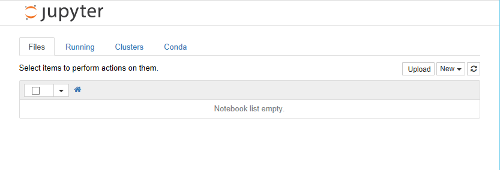

Python Essentials
A workshop provided by the Cathie Marsh Institute (CMI) at the University of Manchester on 1st June 2021
Workshop outline
A 3 hour workshop on Python can be little more than a broad introduction to the language. You will not leave as Python programmers. The aim is to give you the confidence to write your own Python code to solve simple data analysis tasks by possibly adapting the small sections of code that we will use this afternoon.
The workshop is broken up into three sections.
-
We will start by explaining how you can install Python on your own machine and the Jupyter Lab environment in which you can develop your Python code.
-
Within this environment we will go through some of the basics of the Python language. We will only cover the basics that we will want to use in the 3rd section.
-
Finally we will create code for a real data analysis task using an open source dataset as our starting point.
It is loosely based on the Data Carpentry for Social Sciences Python lesson, which is normally taught over a day with material to spare.
We clearly won’t have time to cover all of the Carpentry material, but it is all freely available online at https://datacarpentry.org/python-socialsci/
Download the dataset we will be using
The dataset that we will be using for the workshop is one of the many that comes from movielens and is freely available for download. For convenience you can use this link to download the movie_ratings_summary.csv. For now, you can download it to anywhere you like (Desktop, P: drive) - as long as you remember where you left it!
Section 1
Installing Anaconda Python on a Windows machine
The Jupyter Environment - what we need to know
-
Creating new cells
-
Cut/Copy/Paste
-
Running Cells
-
Output and the numbering system
-
Different cell types
-
Creating new notebooks
-
Naming notebooks
-
Browsing files from left hand pane (Jupyter Lab)
Section 2: Introducing the Python programming language
Python is a general purpose programming language. It is an interpreted language, which makes it suitable for rapid development and prototyping of programming segments or complete small programs.
Python's main advantages:
-
Open source software, supported by Python Software Foundation
-
Available on all major platforms (Windows, macOS, Linux)
-
It is a good language for new programmers to learn due to its straightforward, object-oriented style
-
It is well-structured, which aids readability
-
It is extensible (i.e. modifiable) and is supported by a large community who provide a comprehensive range of 3rd party packages
Interpreted vs. compiled languages
In any programming language, the code must be translated into "machine code" before running it. It is the machine code which is executed and produces results. In a language like C++ your code is translated into machine code and stored in a separate file, in a process referred to as compiling the code. You then execute the machine code from the file as a separate step. This is efficient if you intend to run the same machine code many times as you only have to compile it once and it is very fast to run the compiled machine code.
On the other hand, if you are experimenting, then your code will change often and you would have to compile it again every time before the machine can execute it. This is where interpreted languages have the advantage. You don't need a complete compiled program to "run" what has been written so far and see the results. This rapid prototyping is helped further by use of a system called REPL.
REPL
REPL is an acronym which stands for Read, Evaluate, Print and Loop.
REPL allows you to write single statements of code, have them executed, and if there are any results to show, they are displayed and then the interpreter loops back to the beginning and waits for the next program statement.

In the example above, two variables a and b have been created, assigned to values 2 and 3, and then multiplied together.
Every time you press Return, the line is interpreted. The assignment
statements don't produce any output so you get only the standard
>>> prompt.
For the a*b statement (it is more of an expression than a statement),because the result is not being assigned to a variable, the REPL displays the result of the calculation on screen and then waits for the next input.
The REPL system makes it very easy to try out small chunks of code.
You are not restricted to single line statements. If the Python interpreter decides that what you have written on a line cannot be a complete statement it will give you a continuation prompt of ... until you complete the statement.
Introducing Jupyter notebooks
Jupyter originates from IPython, an effort to make Python development more interactive. Since its inception, the scope of the project has expanded to include Julia, Python, and R, so the name was changed to "Jupyter" as a reference to these core languages. Today, Jupyter supports even more languages, but we will be using it only for Python code. Specifically, we will be using Jupyter notebooks, which allows us to easily take notes about our analysis and view plots within the same document where we code. This facilitates sharing and reproducibility of analyses, and the notebook interface is easily accessible through any web browser. Jupyter notebooks are started from the terminal using
\$ jupyter notebook
Your browser should start automatically and look something like this:

When you create a notebook from the New option, the new notebook will be displayed in a new browser tab and look like this.

Initially the notebook has no name other than 'Untitled'. If you click on 'Untitled' you will be given the option of changing the name to whatever you want.
The notebook is divided into cells. Initially there will be a single input cell marked by In [ ]:.
You can type Python code directly into the cell. You can split the code across several lines as needed. Unlike the REPL we looked at before, the code is not interpreted line by line. To interpret the code in a cell, you can click the Run button in the toolbar or from the Cell menu option, or use keyboard shortcuts (e.g., Shift+Return). All of the code in that cell will then be executed.
The results are shown in a separate Out [1]: cell immediately below. A new input cell In [ ]: is created for you automatically.

When a cell is run, it is given a number along with the corresponding output cell. If you have a notebook with many cells in it you can run the cells in any order and also run the same cell many times. The number on the left hand side of the input cells increments, so you can always tell the order in which they were run. For example, a cell marked In [5]: was the fifth cell run in the sequence.
Although there is an option to do so on the toolbar, you do not have to manually save the notebook. This is done automatically by the Jupyter system.
Not only are the contents of the In [ ]: cells saved, but so are the Out [ ]: cells. This allows you to create complete documents with both your code and the output of the code in a single place. You can also change the cell type from Python code to Markdown using the Cell > Cell Type option.
Markdown is a simple formatting system which allows you to create documentation for your code, again all within the same notebook structure.
The notebook itself is stored as specially-formatted text file with an .ipynb extension. These files can be opened and run by others with Jupyter installed. This allows you to share your code inputs, outputs, and Markdown documentation with others. You can also export the notebook to HTML, PDF, and many other formats to make sharing even easier.
Using the Jupyter environment
New cells
From the insert menu item you can insert a new cell anywhere in the notebook either above or below the current cell. You can also use the '+' button on the toolbar to insert a new cell below.
Change cell type
By default new cells are created as code cells. From the cell menu item you can change the type of a cell from code to markdown. Markdown is a markup language for formatting text, it has much of the power of HTML, but is specifically designed to be human-readable as well. You can use Markdown cells to insert formatted textual explanation and analysis into your notebook. For more information about Markdown, check out these resources:
Hiding output
When you run cells of code the output is displayed immediately below the cell. In general this is convenient. The output is associated with the cell that produced it and remains a part of the notebook. So if you copy or move the notebook the output stays with the code.
However lots of output can make the notebook look cluttered and more difficult to move around. So there is an option available from the cell menu item to 'toggle' or 'clear' the output associated either with an individual cell or all cells in the notebook.
Creating variables and assigning values
The Notebook for this section can be found here
Variables and Types
Comparison with Excel : see Digression_Variables.docx
In Python variables are created when you first assign values to them.
a = 2 b = 3.142
All variables have a data type associated with them. The data type is and indication of the type of data contained in a variable. If you want to know the type of a variable you can use the built-in type() function.
print(type(a)) print(type(b)) s = "Hello World" print(type(s))
<class 'int'>
<class 'float'>
<class 'str'>
There are many more data types available, a full list is available in
the Python documentation. We will be looking a few of them later on.
Arithmetic operations
For now we will stick with the numeric types and do some arithmetic.
All of the usual arithmetic operators are available.
In the examples below we also introduce the Python comment symbol #. Anything to the right of the # symbol is treated as a comment. To a large extent using Markdown cells in a notebook reduces the need for comments in the code in a notebook, but occasionally they can be useful.
We also make use of the built-in print() function, which displays formatted text.
print("a =", a, "and b =" , b) print(a + b) # addition print(a * b) # multiplication print(a - b) # subtraction print(a / b) # division print(b ** a) # exponentiation print(2 * a % b) # modulus - returns the remainder
5.1419999999999995
6.284
-1.142
0.6365372374283896
9.872164
0.8580000000000001
We need to use the print() function because by default only the last output from a cell is displayed in the output cell.
In our example above, we pass four different parameters to the first call of print(), each separated by a comma. A string "a = ", followed by the variable a, followed by the string "b = " and then the variable b.
The output is what you would might have guessed at. But notice that the print command automatically adds spaces between the variable values
All of the other calls to print() are only passed a single parameter. Although it may look like 2 or 3, the expressions are evaluated first and it is only the single result which is seen as the parameter value and printed.
In the last expression a is multiplied by 2 and then the modulus of the result is taken. Had I wanted to calculate a % b and then multiply the result by two I could have done so by using brackets to make the order of calculation clear.
Arithmetic expressions can be arbitrarily complex, but remember people have to read and understand them as well.
A complete set of Python operators can be found in the official documentation. The documentation may appear a bit confusing as it initially talks about operators as functions whereas we generally use them as 'in place' operators. Section 10.3.1 provides a table which list all of the available operators, not all of which are relevant to basic arithmetic.
Using built-in functions
Python has a reasonable number of built-in functions. You can find a complete list in the official documentation.
Additional functions are provided by 3rd party packages which we will look at later on.
For any function, a common question to ask is: What parameters does this function take?
In order to answer this from Jupyter, you can type the function name and then type shift+tab and a pop-up window will provide you with various details about the function including the parameters.
Exercise
For the print() function find out what parameters can be provided
Solution - click me
Solution
Type 'print' into a code cell and then type shift+tab. The following pop-up should appear.

Getting Help for Python
You can get help on any Python function by using the help function. It takes a single parameter of the function name for which you want the help
help(print)
Help on built-in function print in module builtins:
print(...)
print(value, ..., sep=' ', end='\n', file=sys.stdout, flush=False)
Prints the values to a stream, or to sys.stdout by default.
Optional keyword arguments:
file: a file-like object (stream); defaults to the current sys.stdout.
sep: string inserted between values, default a space.
end: string appended after the last value, default a newline.
flush: whether to forcibly flush the stream.
There is a great deal of Python help and information as well as code examples available from the internet. One popular site is stackoverflow which specialises in providing programming help. They have dedicated forums not only for Python but also for many of the popular 3rd party Python packages. They also always provide code examples to illustrate answers to questions. You can also get answers to your queries by simply inputting your question (or selected keywords) into any search engine.
A couple of things you may need to be wary of: There are currently 2 versions of Python in use, in most cases code examples will run in either but there are some exceptions. Secondly, some replies may assume a knowledge of Python beyond your own, making the answers difficult to follow. But for any given question there will be a whole range of suggested solutions so you can always move on to the next.
Data types and how Python uses them
Changing data types
The data type of a variable is assigned when you give a variable a value as we did above. If you re-assign the value of a variable, you can change the data type.
You can also explicitly change the type of a variable by casting it using an appropriate Python builtin function. In this example we have changed a string to a float.
a = "3.142" print(type(a)) a = float(a) print(type(a))
<class 'str'>
<class 'float'>
Although you can always change an integer to a float, if you change a float to an integer then you can lose part of the value of the variable and you won't get an error message.
a = 3.142 print(type(a)) a = 3 print(type(a)) a = a\*1.0 print(type(a)) a = int(a) print(type(a)) a = 3.142 a = int(a) print(type(a)) print(a)
<class 'float'>
<class 'int'>
<class 'float'>
<class 'int'>
<class 'int'>
3
In some circumstances explicitly converting a data type makes no sense; you cannot change a string with alphabetic characters into a number.
b = "Hello World" print(type(b)) b = int(b) print(type(b))
<class 'str'>
---------------------------------------------------------------------------
ValueError Traceback (most recent call last)
<ipython-input-8-9f5f81a470f9> in <module>()
Strings
A string is a simple data type which holds a sequence of characters.
Strings are placed in quotes when they are being assigned, but the quotes don't count as part of the string value.
If you need to use quotes as part of your string you can arbitrarily use either single of double quotes to indicate the start and end of the string.
mystring = "Hello World" print(mystring) name = "Peter" mystring = 'Hello ' + name + ' How are you?' print(mystring) name = "Peter" mystring = 'Hello this is ' + name + "'s code" print(mystring)
Hello World
Hello Peter How are you?
Hello this is Peter's code
String functions
There are a variety of Python functions available for use with strings. In Python a string is an object. An object put simply is something which has data, in the case of our string it is the contents of the string and methods. methods is another way of saying functions.
Although methods and functions are very similar in practice, there is a difference in the way you call them.
One typical bit of information you might want to know about a string is its length for this we use the len() function. For almost anything else you might want to do with strings, there is a method.
mystring = "Hello World" print(len(mystring))
11
If you want to see a list of all of the available methods for a string (or any other object) you can use the dir() function.
print(dir(mystring))
['__add__', '__class__', '__contains__', '__delattr__',
'__dir__', '__doc__', '__eq__', '__format__',
'__ge__', '__getattribute__', '__getitem__',
'__getnewargs__', '__gt__', '__hash__', '__init__',
'__iter__', '__le__', '__len__', '__lt__',
'__mod__', '__mul__', '__ne__', '__new__',
'__reduce__', '__reduce_ex__', '__repr__', '__rmod__',
'__rmul__', '__setattr__', '__sizeof__', '__str__',
'__subclasshook__', 'capitalize', 'casefold', 'center', 'count',
'encode', 'endswith', 'expandtabs', 'find', 'format', 'format_map',
'index', 'isalnum', 'isalpha', 'isdecimal', 'isdigit', 'isidentifier',
'islower', 'isnumeric', 'isprintable', 'isspace', 'istitle', 'isupper',
'join', 'ljust', 'lower', 'lstrip', 'maketrans', 'partition', 'replace',
'rfind', 'rindex', 'rjust', 'rpartition', 'rsplit', 'rstrip', 'split',
'splitlines', 'startswith', 'strip', 'swapcase', 'title', 'translate',
'upper', 'zfill']
The methods starting with ‘__’ are special or magic methods which are not normally used.
Some examples of the methods are given below. We will use others when we start reading files.
myString = "The quick brown fox" print(myString.startswith("The")) print(myString.find("The")) # notice that string positions start with 0 like all indexing in Python print(myString.upper()) # The contents of myString is not changed, if you wanted an uppercase version print(myString) # you would have to assign it to a new variable
The methods starting with 'is...' return a boolean value of either True
or False.
print(myString.isalpha())
The example above returns False because the space character is not
considered to be an Alphanumeric value.
In the example below, we can use the replace() method to remove the spaces and then check to see if the result ‘isalpha’. Chaining methods in this way is quite common. The actions take place in a left to right manner.
print(myString.replace(" ","").isalpha())
You can always avoid using chaining by using intermediary variables.
For example, the following is equivalent to the above
mystring_clean = myString.replace(" ","") print(mystring_clean.isalpha())
If you need to refer to a specific element (character) in a string, you can do so by specifying the index of the character in [] you can also use indexing to select a substring of the string. In Python, indexes begin with 0 (see Index Operator: Working with the Characters of a String for a visual).
myString = "The quick brown fox" print(myString[0]) print(myString[12]) print(myString[18]) print(myString[0:3]) print(myString[0:]) # from index 0 to the end print(myString[:9]) # from the beginning to one before index 9
T
o
x
The
The quick brown fox
The quick
Basic Python data types
So far we have seen three basic Python data types; Integer, Float and String. There is another basic data type; Boolean. Boolean variables can only have the values of either True or False. (Remember, Python is case sensitive, so be careful of your spelling.) We can define variables to be of type boolean by setting their value accordingly. Boolean variables are a good way of coding anything that has a binary range (eg: yes/no).
bool_val_t = True print(type(bool_val_t)) print(bool_val_t) bool_val_f = False print(type(bool_val_f)) print(bool_val_f)
Rather than explicitly assigning a value of True and False it is more typical for the boolean value to be generated as the result of evaluating an expression using comparison operators, basic ones in Python are == for "equal to", !=for "not equal to", as well as >,
<, or >=, <=.
print('hello' == 'HELLO') print('hello' is 'hello') print(3 != 77) print(1 < 2) print('four' > 'three')
False
True
True
True
False
Structured data types
A structured data type is a data type which is made up of some combination of the base data types in a well defined but potentially arbitrarily complex way.
The list
A list is a set of values, of any type separated by commas and delimited by '[' and ']'
list1 = [6, 54, 89 ] print(list1) print(type(list1)) list2 = [3.142, 2.71828, 9.8 ] print(list2) print(type(list2)) myname = "Peter" list3 = ["Hello", 'to', myname ] print(list3) myname = "Fred" print(list3) print(type(list3)) list4 = [6, 5.4, "numbers", True ] print(list4) print(type(list4))
[6, 54, 89]
<class 'list'>
[3.142, 2.71828, 9.8]
<class 'list'>
['Hello', 'to', 'Peter']
['Hello', 'to', 'Peter']
<class 'list'>
[6, 5.4, 'numbers', True]
<class 'list'>
The range function
In addition to explicitly creating lists as we have above it is very common to create and populate them automatically using the range() function in combination with the list() function
list5 = list(range(5)) print(list5)
[0, 1, 2, 3, 4]
Unless told not to range() returns a sequence which starts at 0, counts up by 1 and ends 1 before the value of the provided parameter.
This can be a cause of confusion. range(5) above does indeed have 5 values, but rather than being 1,2,3,4,5 which you might naturally think, they are in fact 0,1,2,3,4. The range starts at 0 and stops one before the value of the single parameter we specified.
If you want different sequences, then you can modify the behaviour of the range() function by using additional parameters.
list6 = list(range(1, 9)) print(list6) list7 = list(range(2, 11, 2)) print(list7)
[1, 2, 3, 4, 5, 6, 7, 8]
[2, 4, 6, 8, 10]
When you specify 3 parameters as we have for list7; the first is the start value, the second is one past the last value and the 3rd parameter is a step value by which to count. The step value can be negative.
Exercise
list7 produces the even numbers from 1 to 10.
-
What is produced if you change the step value in list7 to -2 ? Is this what you expected?
-
Create a list using the range() function which contains the even number between 1 and 10 in reverse order ([10,8,6,4,2])
Solution - click me
Solution
list7 = list(range(2, 11, -2)) print(list7) list8 = list(range(10, 1, -2)) print(list8)
list7 will print nothing because starting at 2 and incrementing by -2 is
the wrong direction to 11.
Strings
Although we think of Strings as a simple data structure, for example when we make assignments;
s1 = "The quick brown fox jumped over the lazy sleeping dog" print(s1)
In many ways we can treat them as lists of individual characters. We can extract characters by using the index and string functions often return an index number.
print(s1[2]) # or a substring print(s1[4:9]) # String functions often return index values print(s1.find('jumped'))
One string function which doesn’t exist in base Python is a function to reverse a string. So how could we do it? There are undoubtedly many ways, but the most popular approach from on-line help searches suggests;
s1_rev = s1[::-1] print(s1_rev)
Control Structures
Programs are rarely linear
Most programs do not work by executing a simple sequential set of statements. The code is constructed so that decisions and different paths through the program can be taken based on changes in variable values.
To make this possible all programming language have a set of control structures which allow this to happen.
In this episode we are going to look at how we can create loops and branches in our Python code. Specifically we will look at three control structures, namely:
-
If..Else..
-
While...
-
For ...
The if statement and variants
The simple if statement allows the program to branch based on the evaluation of an expression
The basic format of the if statement is:
if expression :
statement 1
statement 2
...
statement n
statement always executed
If the expression evaluates to True then the statements 1 to n will be executed followed by statement always executed . If the expression is False, only statement always executed is executed. Python knows which lines of code are related to the if statement by the indentation, no extra syntax is necessary.
Below are some examples:
print("\nExample 1\n") value = 5 threshold= 4 print("value is", value, "threshold is ",threshold) if value > threshold : print(value, "is above ", threshold, " threshold") print("\nExample 2\n") high_threshold = 6 print("value is", value, "new threshold is ",high_threshold) if value > high_threshold : print(value , "is above ", high_threshold, "threshold") print("\nExample 3\n") mid_threshold = 5 print("value is", value, "final threshold is ",mid_threshold) if value == mid_threshold : print("value, ", value, " and threshold,", mid_threshold, ", are equal")
Example 1
value is 5 threshold is 4
5 is bigger than 4
Example 2
value is 5 new threshold is 6
Example 3
value is 5 final threshold is 5
value, 5, and threshold, 5, are equal
In the examples above there are three things to notice:
-
The colon `:` at the end of the if line. Missing this out is a common error.
-
The indentation of the print statement. If you remembered the : on the line before, Jupyter (or any other Python IDE) will automatically do the indentation for you. All of the statements indented at this level are considered to be part of the if statement. This is a feature fairly unique to Python, that it cares about the indentation. If there is too much, or too little indentation, you will get an error.
-
The if statement is ended by removing the indent. There is no explicit end to the if statement as there is in many other programming languages
In the last example, notice that in Python the operator used to check equality is ==.
Exercise
Add another if statement to example 2 that will check if b is greater than or equal to a
Solution - click me
Solution
print("\nExample 2a\n") a= 3 b= 4 print("a is", a, "b is",b) if a > b : print(a, "is bigger than ", b) if a <= b : print(b, "is bigger than or equal to ", a)
Instead of using two separate if statements to decide which is larger we can use the if ... else ... construct
# If ... Else ... value = 4 threshold = 5 print("value = ", value, "and threshold = ", threshold) if value > threshold : print("above threshold") else : print("below threshold") value = 4 and threshold = 5
below threshold
A further extension of the if statement is the if ... elif ...else version.
The example below allows you to be more specific about the comparison of a and b.
# If ... Elif ... Else ... EndIf a = 5 b = 4 print("a = ", a, "and b = ", b) if a > b : print(a, " is greater than ", b) elif a == b : print(a, " equals ", b) else : print(a, " is less than ", b) a = 5 and b = 4
5 is greater than 4
The overall structure is similar to the if ... else statement. There are three additional things to notice:
-
Each elif clause has its own test expression.
-
You can have as many elif clauses as you need
-
Execution of the whole statement stops after an elif expression is found to be True. Therefore the ordering of the elif clause can be significant.
The while loop
The while loop is used to repeatedly execute lines of code until some condition becomes False.
For the loop to terminate, there has to be something in the code which will potentially change the condition.
# while loop n = 10 cur_sum = 0 # sum of n numbers i = 1 while i <= n : cur_sum = cur_sum + i i = i + 1 print("The sum of the numbers from 1 to", n, "is ", cur_sum)
The sum of the numbers from 1 to 10 is 55
Points to note:
-
The condition clause
(i <= n)in the while statement can be anything which when evaluated would return a Boolean value of either True of False. Initiallyihas been set to 1 (before the start of the loop) and therefore the condition is True. -
The clause can be made more complex by use of parentheses and and and or operators amongst others
-
The statements after the while clause are only executed if the condition evaluates as True.
-
Within the statements after the while clause there should be something which potentially will make the condition evaluate as False next time around. If not the loop will never end.
-
In this case the last statement in the loop changes the value of
iwhich is part of the condition clause, so hopefully the loop will end. -
We called our variable cur_sum and not sum because sum is a builtin function (try typing it in, notice the editor changes it to green). If we define sum = 0 now we can't use the function sum in this Python session.
Exercise - Things that can go wrong with while loops
In the examples below, without running them try to decide why we will not get the required answer. Run each, one at a time, and then correct them. Remember that when the input next to a notebook cell is [*] your Python interpreter is still working.
# while loop - summing the numbers 1 to 10 n = 10 cur_sum = 0 # sum of n numbers i = 0 while i <= n : i = i + 1 cur_sum = cur_sum + i print("The sum of the numbers from 1 to", n, "is ", cur_sum) # while loop - summing the numbers 1 to 10 n = 10 cur_sum = 0 boolvalue = False # sum of n numbers i = 0 while i <= n and boolvalue: cur_sum = cur_sum + i i = i + 1 print("The sum of the numbers from 1 to", n, "is ", cur_sum) # while loop - summing the numbers 1 to 10 n = 10 cur_sum = 0 # sum of n numbers i = 0 while i != n : cur_sum = cur_sum + i i = i + 1 print("The sum of the numbers from 1 to", n, "is ", cur_sum) # while loop - summing the numbers 1.1 to 9.9 i. steps of 1.1 n = 9.9 cur_sum = 0 # sum of n numbers i = 0 while i != n : cur_sum = cur_sum + i i = i + 1.1 print(i) print("The sum of the numbers from 1.1 to", n, "is ", sum)
Solution
Solution - click me
-
Because i is incremented before the sum, you are summing 1 to 11.
-
The Boolean value is set to False the loop will never be executed.
-
When i does equal 10 the expression is False and the loop does not execute so we have only summed 1 to 9
-
Because you cannot guarantee the internal representation of Float, you should never try to compare them for equality. In this particular case the
inever 'equals'nand so the loop never ends. If you did try running this, you can stop it using Ctrl+c in a terminal or going to the kernel menu of a notebook and choosing interrupt. {: .solution} {: .challenge} -
In practice the more usual way of performing this kind of task, i.e. when you want to repeat something a fixed number of times, you would use code similar to this:
n = 10 cur_sum = 0 for i in range(1, n+1) : cur_sum = cur_sum + i print("The sum of the numbers from 1 to", n, "is ", cur_sum)
The for loop
The for loop, like the while loop repeatedly executes a set of statements. The difference is that in the for loop we know in at the outset how often the statements in the loop will be executed. We don't have to rely on a variable being changed within the looping statements.
The basic format of the for statement is
for variable_name in some_sequence :
statement1
statement2
...
statementn
The key part of this is the some_sequence. The phrase used in the documentation is that it must be 'iterable'. That means, you can count through the sequence, starting at the beginning and stopping at the end.
There are many examples of things which are iterable some of which we have already come across.
- Lists are iterable - they don't have to contain numbers, you iterate over the elements in the list.
- The range() function
- The characters in a string
print("\nExample 1\n") for i in [1,2,3] : print(i) print("\nExample 2\n") for name in ["Tom", "Dick", "Harry"] : print(name) print("\nExample 3\n") for name in ["Tom", 42, 3.142] : print(name) print("\nExample 4\n") for i in range(3) : print(i) print("\nExample 5\n") for i in range(1,4) : print(i) print("\nExample 6\n") for i in range(2, 11, 2) : print(i) print("\nExample 7\n") for i in "ABCDE" : print(i) print("\nExample 8\n") longString = "The quick brown fox jumped over the lazy sleeping dog" for word in longString.split() : print(word)
Example 1
1
2
3
Example 2
Tom
Dick
Harry
Example 3
Tom
42
3.142
Example 4
0
1
2
Example 5
1
2
3
Example 6
2
4
6
8
10
Example 7
A
B
C
D
E
Example 8
The
quick
brown
fox
jumped
over
the
lazy
sleeping
dog
Exercise
Suppose that we have a string containing a set of 4 different values separated by ; like this:
items_owned = "bicycle;television;solar_panel;table"
Research the split() method and then rewrite example 8 so that it prints the 4 components of items_owned
Solution
Solution - click me
items_owned = "bicycle;television;solar_panel;table" for item in items_owned.split(",") : print(item)
Defining a function
We have already made use of several Python builtin functions like print, list and range.
In addition to the functions provided by Python, you can write your own functions.
Functions are used when a section of code needs to be repeated at various different points in a program. It saves you re-writing it all. In reality you rarely need to repeat the exact same code. Usually there will be some variation in variable values needed. Because of this, when you create a function you are allowed to specify a set of parameters which represent variables in the function.
In our use of the print function we have provided as a parameter, whatever it is we wanted to print. Typically whenever we use the print function we pass a different parameter value.
The ability to specify parameters make functions very flexible.
def get_item_count(items_str,sep): ''' This function takes a string with a list of items and the character that they're separated by and returns the number of items ''' items_list = items_str.split(sep) num_items = len(items_list) return num_items items_owned = "bicycle;television;solar_panel;table" print(get_item_count(items_owned,';'))
4
Points to note:
-
The definition of a function (or procedure) starts with the def keyword and is followed by the name of the function with any parameters used by the function in brackets.
-
The definition clause is terminated with a : which causes indentation on the next and subsequent lines. All of these lines form the statements which make up the function. The function ends after the indentation is removed.
-
Within the function, the parameters behave as variables whose initial values will be those that they were given when the function was called.
-
functions have a return statement which specifies the value to be returned. This is the value assigned to the variable on the left-hand side of the call to the function. (power in the example above)
-
You call (run the code) of a function simply by providing its name and values for its parameters the same way you would for any builtin function.
-
Once the definition of the function has been executed, it becomes part of Python for the current session and can be used anywhere.
-
Like any other builtin function you can use shift + tab in Jupyter to see the parameters.
-
At the beginning of the function code we have a multiline comment denoted by the ''' at the beginning and end. This kind of comment is known as a docstring and can be used anywhere in Python code as a documentation aid. It is particularly common, and indeed best practice, to use them to give a brief description of the function at the beginning of a function definition in this way. This is because this description will be displayed along with the parameters when you use the help() function or shift + tab in Jupyter.
-
The variable x defined within the function only exists within the function, it cannot be used outside in the main program.
In our get_item_count function we have two parameters which must be provided every time the function is used. You need to provide the parameters in the right order or to explicitly name the parameter you are referring to and use the = sign to give it a value.
In many cases of functions we want to provide default values for parameters so the user doesn't have to. We can do this in the following way
def get_item_count(items_str,sep=';'): ''' This function takes a string with a list of items and the character that they're separated by and returns the number of items if the sep parameter is not provided, then the ‘,’ character is taken as the default value ''' items_list = items_str.split(sep) num_items = len(items_list) return num_items print(get_item_count(items_owned))
The only change we have made is to provide a default value for the sep parameter. Now if the user does not provide a value, then the value of ';' will be used. Because items_str is the first parameter we can specify its value by position. We could however have explicitly named the parameters we were referring to.
print(get_item_count(items_str = items_owned, sep=';'))
4
Exercise
-
Write a function definition to calculate the volume of a cuboid. The function will use three parameters H, W and L and return the volume.
-
Supposing that in addition to the volume I also wanted to calculate the surface area and the sum of all of the edges. Would I (or should I) have three separate functions or could I write a single function to provide all three values together?
Solution
Solution - click me
def cuboid(H,W,L): vol = H*W*L sa = 2*(H*W + H*L + L*W) edges = 4*(H + W + L) return vol, sa, edges volume, surface_area, length_of_edges = cuboid(2,3,4) print("Volume = ", volume, " Surface_area = ", surface_area, " Sum of edges = ", length_of_edges)
The cuboid function above returns all three values from a single call. This means that you need three variables in which to place the 3 returned values. If you do not provide three variables, you will get an error. Unless you are always going to use the 3 values, it would probably be better in this case to use distinct functions for these three cases.
Using libraries
The functions we have created above only exist for the duration of the session in which they have been defined. If you start a new Jupyter notebook you will have to run the code to define them again.
If all of your code is in a single file or notebook this isn't really a problem.
There are however many (thousands) of useful functions which other people have written and have made available to all Python users by creating libraries (also referred to as packages or modules) of functions.
You can find out what all of these libraries are and their contents by visiting the main (python.org) site.
We need to go through a 2-step process before we can use them in our own programs.
Step 1. use the pip command from the commandline. pip is installed as part of the Python install and is used to fetch the package from the Internet and install it in your Python configuration.
> pip install <package name>
pip stands for Python install package and is a commandline function. Because we are using the Anaconda distribution of Python, all of the packages that we will be using in this lesson are already installed for us, so we can move straight on to step 2.
Step 2. In your Python code include an import package-name statement. Once this is done, you can use all of the functions contained within the package.
As all of these packages are produced by 3rd parties independently of each other, there is the strong possibility that there may be clashes in function names. To allow for this, when you are calling a function from a package that you have imported, you do so by prefixing the function name with the package name. This can make for long-winded function names so the import statement allows you to specify an alias for the package name which you must then use instead of the package name.
In future episodes, we will be importing the csv, json, pandas, numpy and matplotlib modules. We will describe their use as we use them.
The code that we will use is shown below
import csv import json import pandas as pd import numpy as np import matplotlib.pyplot as plt
The first two we don't alias as they have short names. The last three we do. Matplotlib is a very large library broken up into what can be thought of as sub-libraries. As we will only be using the functions contained in the pyplot sub-library we can specify that explicitly when we import. This saves time and space. It does not effect how we call the functions in our code.
The alias we use (specified after the as keyword) is entirely up to us. However those shown here for pandas, numpy and matplotlib are nearly universally adopted conventions used for these popular libraries. If you are searching for code examples for these libraries on the Internet, using these aliases will appear most of the time.
Introduce the data set and the processing
For the rest of this workshop we will be using a dataset derived from the Movielens opensource datasets (https://movielens.org/). It is the one we downloaded at the beginning of the workshop. Our dataset provides viewers ratings of nearly 3000 movies from a variety of genres.
Initially we will use the dataset to demonstrate the pandas package. We will then use it to create some simple graphics
What is Pandas?
The Notebook for this section can be found here
pandas is a Python library containing a set of functions and specialised data structures that have been designed to help Python programmers to perform data analysis tasks in a structured way.
Most of the things that pandas can do can be done with basic Python, but the collected set of pandas functions and data structure makes the data analysis tasks more consistent in terms of syntax and therefore aids readabilty.
Particular features of pandas that we will be looking at over this and the next couple of episodes include:
-
Reading data stored in CSV files (other file formats can be read as
well) -
Slicing and subsetting data in Dataframes (tables!)
-
Dealing with missing data
-
Reshaping data (long -> wide, wide -> long)
-
Inserting and deleting columns from data structures
-
Aggregating data using data grouping facilities using the
split-apply-combine paradigm -
Joining of datasets (after they have been loaded into Dataframes)
Importing the pandas library
Importing the pandas library is done in exactly the same way as for any other library. In almost all examples of Python code using the pandas library, it will have been imported and given an alias of pd. We will follow the same convention.
import pandas as pd
Pandas data structures
There are two main data structures used by pandas, they are the Series and the Dataframe. The Series equates in general to a vector or a list. The Dataframe is equivalent to a table. Each column in a pandas Dataframe is a pandas Series data structure.
We will mainly be looking at the Dataframe.
We can easily create a Pandas Dataframe by reading a .csv file
Reading a csv file
In Pandas, csv files are read as complete datasets. All of the dataset records are assembled into a Dataframe. If your dataset has column headers in the first record then these can be used as the Dataframe column names. You can explicitly state this in the parameters to the call, but pandas is usually able to infer that there is a header row and use it automatically.
We are going to read in our movie_ratings_summary.csv file.
input_file = '../data/movie_ratings_summary.csv' df_movies = pd.read_csv(input_file, sep=',')
It is usual to put the name (and path) of the dataset into a string variable first and then pas the variable to the read_csv method. The second parameter indicates how the data items are separated, ‘,’ is in fact the default for read_csv so we could have omitted it. However having it as a parameter makes the method more flexible. We can still use read_csv to read tab delimited file (sep = '\t') or ‘csv’ files from European sources where they use ‘;’ instead of ‘,’.
Exercise
What happens if you specify sep='\t' when reading a csv dataset?
Solution
If you tell pandas to that your columns are separated by the tab character and there aren't any, then each record will be treated as a single column. So the shape is given as 2811 rows (correct) but only one column. When the contents is displayed the only column name is the complete first record.
Getting information about a Dataframe
You can find out the type of the variable df_movies is by using the type function.
print(type(df_movies))
You can find out how rows and columns it has with:
df_movies.shape
You can see the first few rows of the dataframe by using;
df_movies.head()
The column names have been taken from the first record of the file. On the left hand side is a column with no name. The entries here have been provided by pandas and act as an index to reference the individual rows of the Dataframe. Most of the time we won’t need to use this index.
The read_csv() function has an index_col parameter which you can use to indicate which of the columns in the file you wish to use as the index instead. Although the movies dataset does have a column which would uniquely identify each row; Title, we don’t need to specify it at this point.
Exercise
-
As well as the
head()method there is atail()method. What do you think it does? Try it. -
Both
head()andtail()accept a single numeric parameter. What do you think it does? Try it.
You can obtain other basic information about your Dataframe of data with:
# How many rows? print(len(df_movies)) # How many rows and columns - returned as a tuple print(df_movies.shape) #How many 'cells' in the table print(df_movies.size) # What are the column names print(df_movies.columns) # what are the data types of the columns? print(df_movies.dtypes)
Selecting rows and columns from a pandas Dataframe
If we know which columns we want before we read the data from the file we can tell read_csv() to only import those columns by specifying columns either by their index number (starting at 0) as a list to the usecols parameter. Alternatively we can also provide a list of column names.
input_file = '../data/movie_ratings_summary.csv' df_movies_some_cols = pd.read_csv(input_file, sep=',', usecols= [1,2,3,4,5,6,]) print(df_movies_some_cols.shape) print(df_movies_some_cols.columns) df_movies_some_cols = pd.read_csv(input_file, sep=',', usecols= ['genres', 'Awful', 'Bad', 'Average', 'Good', 'Excellent']) print(df_movies_some_cols.columns)
Let us assume for now that we read in the complete file which is now in the Dataframe df_movies, how can we now refer to specific columns?
There are two ways of doing this using the column names (or labels):
# Both of these statements are the same print(df_movies['genres']) # and print(df_movies.genres)
If we are interested in more than one column, the 2nd method above cannot be used. However in the first, although we used a string with the value of 'genres' we could also have provided a list of strings. Remember that lists are enclosed in [].
print(df_movies'title', 'genres')
Exercise
What happens if you:
-
List the columns you want are out of order from the way they appear in the file?
-
Put the same column name in twice?
-
Put in a non-existing column name? (a.k.a Typo)
Filtering by Rows
You can filter the Dataframe by rows by specifying a range in the form of a:b. a is the first row and b is one beyond the last row required.
# select row with index of 1, 2 and 3 (rows 2, 3 and 4 in the Dataframe) df_movies_some_rows = df_movies[1:4] df_movies_some_rows
Exercise
What happens if we ask for a single row instead of a range?
Solution
Solution - click me
df_movies[1]
You get an error if you only specify 1. You need to use :1 or 0:1 to get the first row returned. The : is always required. You can use : by itself to return all of the rows.
Using criteria to filter rows
It is more likely that you will want to select rows from the Dataframe based on some criteria, such as "all rows where the value for genres is ‘Comedy’.
df_movies_some_rows = df_movies[(df_movies.genres == 'Comedy')] df_movies_some_rows
The criteria can be more complex and isn't limited to a single column's values:
df_movies_some_rows = df_movies[(df_movies.genres == 'Comedy')& (df_movies.Excellent > 5] df_movies_some_rows
We can combine the row selection with column selection:
df_movies_some_rows = df_movies[ (df_movies.genres == 'Comedy') & (df_movies.Bad <= 2)][['title', 'genres']] df_movies_some_rows
Using Pandas functions to summarise data in a Data Frame
For variables which contain numerical values we are often interested in various statistical measures relating to those values. For categorical variable we are often interested in the how many of each unique values are present in the dataset.
For numeric variables we can obtain a variety of basic statistical information by using the describe() method.
df_movies.describe()
This can be done for the Dataframe as a whole, in which case some of the results might have no sensible meaning. If there are any missing values, represented in the display as NaN you will get a warning message.
You can also .describe() on a single variable basis.
df_movies['Awful'].describe()
There are also a set of methods which allow us to obtain individual values.
print(df_movies['Excellent'].min()) print(df_movies['Excellent'].max()) print(df_movies['Excellent'].mean()) print(df_movies['Excellent'].std()) print(df_movies['Excellent'].count()) print(df_movies['Excellent'].sum())
Unlike the describe() method which converts the variable to a float (when it was originally an integer), the individual summary methods only does so for the returned result if needed.
Categorical variables
For categorical variables, numerical statistics don't make any sense. For a categorical variable we can obtain a list of unique values used by the variable by using the unique() method.
df_movies.genres.unique()
Knowing all of the unique values is useful but what is more useful is knowing how many occurrences of each there are. In order to do this we can use the 'groupby()' method.
Having performed the 'groupby()' we can then describe() the results. The format is similar to that which we have seen before except that the 'grouped by' variable appears to the left and there is a set of statistics for each unique value of the variable.
grouped_data = df_movies.groupby('genres') grouped_data.describe()
You can group by more than one variable at a time by providing them as a list.
grouped_data = df_movies.groupby(['genres', 'Awful']) grouped_data.describe()
You can also obtain individual statistics if you want.
All_Average = df_movies.groupby(['genres', 'Awful'])['Average'].count() All_Average
Creating and Removing new columns
So far we have just been using the columns that were in the original dataset. We can create new columns in our dataframe based on the values of the other columns. When you create a new column, the new column values are added to each row of the dataframe.
You create new columns in a very similar way to which we create any variable.
# The '\' characters are line continuation characters. # The indentation here is my choice, Python doesn't insist on it df_movies['Total'] = df_movies.Awful + \ df_movies.Bad + \ df_movies.Average + \ df_movies.Good + \ df_movies.Excellent df_movies.head()
To drop a column we use the drop() method
df_movies.drop(columns = 'Total', inplace = True) df_movies.head()
Matplotlib
Matplotlib is a Python graphical library that can be used to produce a variety of different graph types.
The pandas library contains very tight integration with matplotlib. There are functions in pandas that automatically call matplotlib functions to produce graphs.
Although we are using Matplotlib in this workshop, pandas can make use of several other graphical libraries available from within Python such as ggplot2 and seaborn as well as interactive graphic packages such as Plotly and Bokeh.
Importing matplotlib
The matplotlib library can be imported using any of the import techniques we have seen. As pandas is generally imported with import pandas as pd, you will find that matplotlib is most commonly imported with import matplotlib as plt where 'plt' is the alias.
In addition to importing the library, in a Jupyter notebook environment we need to tell Jupyter that when we produce a graph we want it to be display the graph in a cell in the notebook just like any other results. To do this we use the %matplotlib inline directive.
If you forget to do this, you will have to add plt.show() to see the graphs.
import matplotlib.pyplot as plt %matplotlib inline
A variety of graphing examples are provided in the Data Carpentry for Social Science course at this url: https://datacarpentry.org/python-socialsci/13-matplotlib/index.html
For this workshop we will create some examples barcharts using the Movielens data set that we have been using.
The code for these examples are contained in the files;